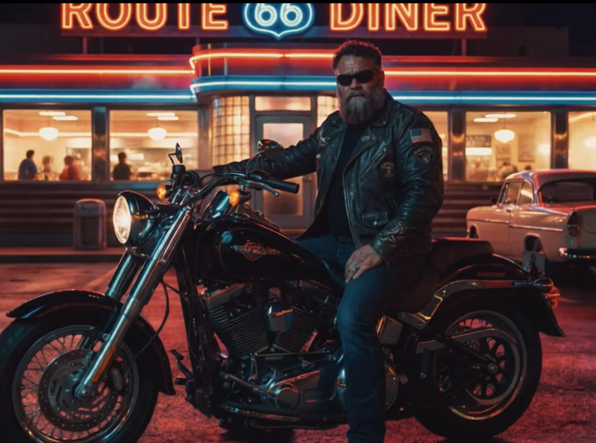
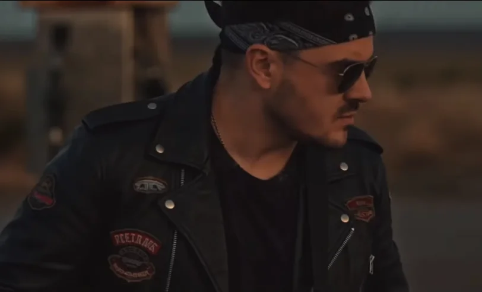

Controllable, production-grade generative systems, built to hold a consistent creative identity across an entire body of work, inside the pipelines creatives already use.
Most generative tools are built for the single shot: one prompt, one image, one moment of novelty. Production is the opposite problem. The work has to stay coherent across hundreds of assets, bend to direction on demand, and fit the tools a team already depends on.
Sysqo builds the systems that make that possible. The difficulty is consistency across a sequence, controllability under a creative brief, and real integration into a working pipeline.
The work below is the founder's own published creative output, released under the handle @Daz: techniques developed and stress-tested in public. It stands as a demonstration of craft. Client work is never shown, and is always abstracted.

